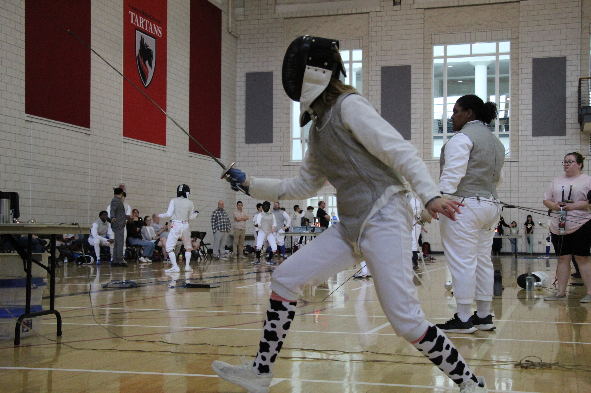
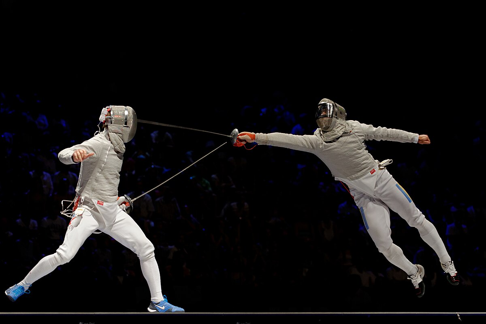

Disciplines
In fencing there are three disciplines: foil, saber, and epee. Each discipline comes with its own rules on touches, target area, and right of way that will be explained on this page.
Something to note while reading is that each weapon used in a specific discipline shares the same name as that discipline. For example, the weapon used in foil is just called a foil.
Foil
Touches
On the tip of a foil and epee blade, there is a small button that, when clicked, signals to the scoring machine that a touch has occurred. If a fencer clicks this button by striking the tip of their weapon against their opponent's conductive target area, then they may have scored a point. If their blade's button hits a non-target area, the scoring machine registers this touch "off target" and the fencers reset to wherever the off target touch occured. If two fencers make a touch at the same time, then the rules of right of way need to be considered.
Target Area
Foil has the most limited target area out of the three styles. Only the torso is considered target area, which is covered by the silver, conductive lame and conductive part of the mask. This means that a fencer can only score a point if the tip of their foil touches between their opponent's shoulders to their hips. Because of the accuracy and point control needed when fencing foil, it is often the discipline that beginners start with. Foil teaches beginner fencers to be more precise and accurate, which is useful for any style of fencing.
Right of Way
Right of way is often the most confusing part of fencing for people to comprehend. Even more advanced fencers struggle with this concept. In foil and saber, right of way are the rules that assert whether you or your opponent scored the point when you get a touch at the same time. If a fencer is attacking, they want to have gained right of way so that when they touch their opponent, they are certain that the point is there's. Right of way can be gained in a few ways:
- Exending your arm before the opponent, which initiates the attack.
- Parrying (blocking) the opponent's blade. This should then be followed by a riposte (parry then touch) to gain a point.
- Extending your arm and then holding it (point-in-line).
- Beating the opponent's blade to intiate an attack.

In this image, you can see that the silver conductive area covers just the fencers' torsos. This conductive area signifies the target area for foil!

This is a picture of me fencing foil at a competition at Carnegie Mellon University. My teammates and I wore matching cow socks!
Saber
Touches
In saber, the whole blade is conductive. This means that a fencer can score a point whenever any part of the blade touches the opponent's target area. Slashing is the primary way of scoring touches as a result. Unlike in foil, there is no such thing as an off target call. This means that if a fencer touches something off target with their blade, the round continues as normal and the scoring machine does not register that a touch occurred. If two fencers get a touch at the same time, then the rules of right of way need to be considered.
Target Area
Saber has a bigger target area than in foil, but still less than epee. The top of the head to the hips is considered target area. This includes the fencer's arms and full mask. Saber fencers wear a silver lame that covers this section of their body. This target area is meant to simulate a cavalry rider on top of a horse!
Right of Way
Right of way is the same in saber as it is in foil. Refer to foil's right of way section to learn more.

In this image, you can see the silver conductive area on each fencer covers their torso, arms, and mask. This signifies their target area.
Epee
Touches
Touches are scored the same way in epee as they are in foil. There is a button on the tip of the blade that allows you to score a touch. Refer to foil's touches section to learn more.
Target Area
Epee has the largest target area of the three disciplines. The target area is the whole body, including the head, feet, and hands! The epee's bell guard is designed to be very large as a way to cover the hand as it is part of the target area. Since the whole body is target area, epee fencers do not wear a silver lame at all. When anything is touched in epee, this registers as a point. If a fencer touches something that is not target area, such as the ground, the scoring machine will register it as a point, but the referee will throw it out. This means that epee also does not have "off-target" like foil does. Because of the large target area, epee is most often the style you will see in movies and tv!
Right of Way
In epee, there is no right of way. If both fencers get a touch at the same time, then they are both awarded a point.

The fencers in this image have no silver conductive area because in epee, the whole body is target area.
Comments & Quiz
Comments
Test your knowledge!

What fencing discipline is seen in this photo?
See average quiz results:
0%
0%